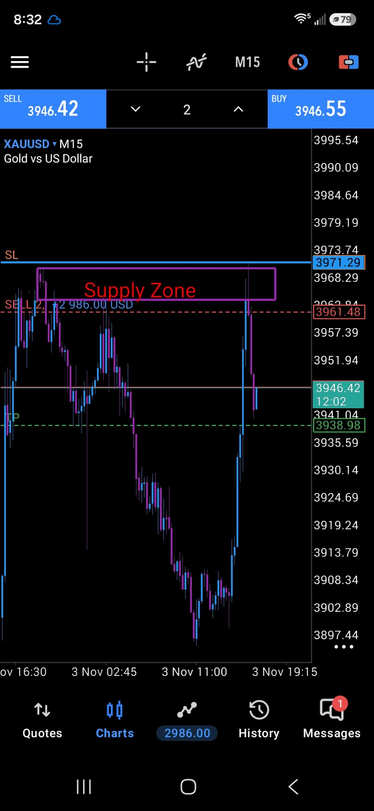

Protect capital first. Trade only high-quality setups. Zone first, rejection second, execute once. Supply and demand only.
Live chart: Gold (XAU/USD), 15-minute candles, New York time. The price in the chart header is the live gold price.
Spot gold (XAU/USD) is lower today, trading around $3,909 to $3,915 an ounce in intraday reports, down about 0.8% to 1% on the day. FXStreet put XAU/USD around $3,909, down 0.93%, and goldprice.com put spot at $3,913.84, down 1.05%, as of 7:28 AM ET. That gives back part of Monday's rebound, when gold closed at $3,946.74 after Friday's one-year low near $3,870.
Oil rebounded and rate worries returned. FXStreet reported WTI crude above $97, up 2.45% after a reported US strike on Iran's Qeshm Island, reversing Monday's near 7% oil fall that had eased inflation concerns. Expectations of higher US rates for longer also weighed, with traders pricing about a 74% chance of a December Fed hike, and markets stayed cautious ahead of today's US midterm elections.
Resistance at $3,939 to $3,950, then $3,960 to $3,975, then $4,000. Support at $3,900 to $3,910, then $3,870 to $3,880 at Friday's low, then $3,800 on a break below $3,870.
US midterm / Congressional elections are all day. JOLTS Job Openings at 10:00 AM ET (forecast 7.15M, previous 7.08M) and Factory Orders at 10:00 AM ET. Bank of Canada Governor Macklem speaks at 11:00 AM ET. All times ET. Forex Factory displayed the calendar in Central Time; times here are converted to ET.
Wednesday, November 4: ADP employment at 8:15 AM ET, US Trade Balance at 8:30 AM ET, Final Services PMI at 9:45 AM ET, and ISM Services PMI at 10:00 AM ET. Thursday, November 5: Bank of England decision at 7:00 AM ET, jobless claims at 8:30 AM ET, and Fed speakers Hammack at 8:50 AM ET and Barkin at 9:10 AM ET. Friday, November 6: October jobs report at 8:30 AM ET (Non-Farm Employment Change forecast 65K after 29K, unemployment expected at 4.2%) and Michigan sentiment at 10:00 AM ET. Next FOMC meeting is December 8 to 9.
Today's main US releases, JOLTS and Factory Orders, land at 10:00 AM ET, right at the end of your 8:30 to 10:00 AM ET window. Friday's jobs report lands at 8:30 AM ET, right at your window open.
Dated snapshot for Tuesday, November 3, 2026. Prices are intraday reports, not live quotes.
Full calendar: Forex Factory Calendar
High impact events only, straight from Forex Factory. All times ET.
For reference, Forex Factory rates this week's ISM Manufacturing, JOLTS and ISM Services as orange (medium), and ADP as yellow (low) — not red. Updated every Sunday.
Pass the evaluation and get funded by protecting capital first and trading only high-quality setups.
Two charts only: the 15-minute and the 5-minute. The 15-minute sets the direction. Look for:
Ask yourself:
Never fight the 15-minute direction.
Drop to the 15-minute chart. This is where the markup happens. Mark:
Zones plus support and resistance. Only mark the obvious ones.
Execution is on the 5-minute chart. When price reaches your 15-minute zone, drop to the 5-minute chart and take the first rejection at the zone — that is the entry.
Watch the two plays run. Both loop.
Price rallies into supply and gets rejected: sell. Price falls into demand and gets rejected: buy. The entry is the first rejection at the zone, on the 5-minute.
Resistance holds twice. The third push breaks through, price comes back to retest the same line — now support — and that retest is the entry.
XAUUSD on the 15-minute chart, from a live session. Markup on the 4-hour, execute on the 15-minute — supply and demand plus support and resistance.

Find the trend first: on Nov 3 price was making lower highs and lower lows — trend down. Then mark the most recent supply and demand zone in that trend. At the 8:00 AM markup the Supply Zone (3,961–3,971) was drawn on the 4-hour and carried down to the 15-minute. Price ran up into the zone and rejected. The sell sits at the zone, stop loss above it at 3,971.29, take profit at 3,938.98 — price at capture 3,946.42, on its way down.
Aggressive entry: enter when price touches the zone — first touch, first rejection.
Break of the candle: wait for the rejection candle to form at the zone, then enter when price breaks that candle — below its low on a sell, above its high on a buy.
Conservative entry: wait until price is outside of the zone and closed — the close outside the zone confirms it before you enter.
The waiting rule: as long as price is inside the zone, you can continue to wait. Inside the zone, nothing is decided yet — the entry comes when price is outside of the zone and closed.
Enter only when several factors line up, such as:
Your confirmation is the rejection at the zone. Look for:
Avoid weak, indecisive candles. See the Candlestick Patterns tab above for a visual reference.
Market structure comes before candlesticks.
Capital protection comes first.
No setup = No trade.
Think: "I only need one good trade."
You don't need to catch every move.
Every weekend ask:
Review both your winners and losers.
The plan, in one card. Gold here is MGC (micro gold) — no MT5 on this firm; it runs on Tradovate, NinjaTrader, or TradingView.
Same system: supply and demand zones, first rejection, execute once.
Tap a card to reveal the setup notes. These are rejection confirmations at a zone, not trades by themselves. Green = bullish confirmation, pink = bearish confirmation.